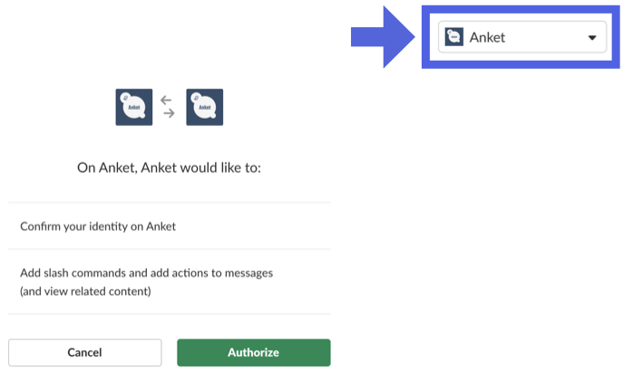

- Slack上でアンケートを作成できます
- 集めた回答数はSlack上でリアルタイムで確認することができます
- 誰が何を回答したかはWEB上で確認する事ができます
インストール方法
-
次のボタンをクリックします

-
インストールしたいワークプレイスを選択します
/anket アンケートのタイトル 選択肢1 選択肢2 選択肢3 選択肢4 選択肢5のように投稿します /anket アンケートのタイトルのようにタイトルのみを入力して投稿します